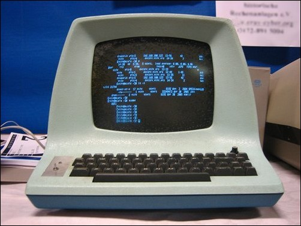
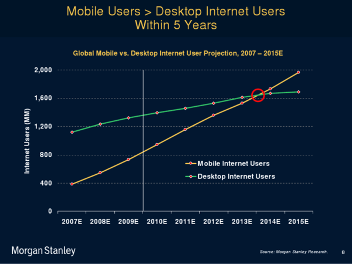
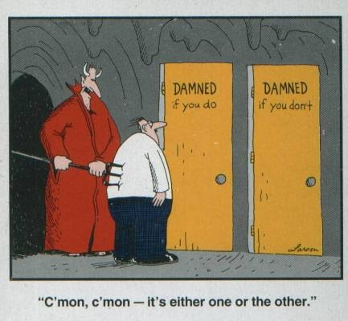
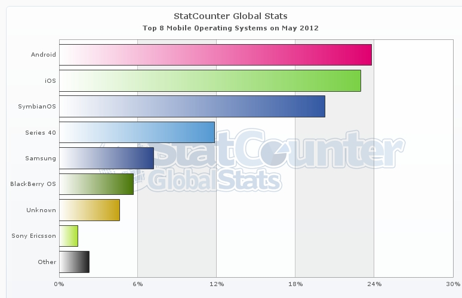
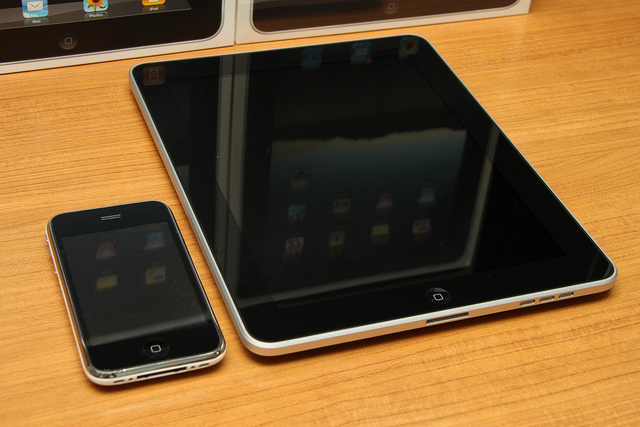

Going Mobile
with your RichFaces Applications
- Brian Leathem
- Senior Software Engineer, Red Hat
- 06.28.12
The plan.
- Why Mobile?
- Why JSF?
- Why RichFaces?
Who am I?
- Senior Software Engineer at Red Hat
- RichFaces Project Lead
- Represent Red Hat on the JSF 2.2 EG (JSR-344)
- Seam Faces mobule lead
Why Mobile?
I write desktop apps!
Smartphones!

Smartphones are everyhwere!
Choose: Native app or Mobile
-
Web:
- Common across platforms
- HTML 5 / CSS 3 / javascript
- Native:
- Responsive
- Touch-specific controls
- Native L&F
Choose: Native app or Mobile
So how do I choose?
You need a mobile web app regardless!
Mobile Web is Ready
- HTML 5
- CSS 3
- JavaScript
Html 5 Web App → Native App
target = Webkit
Device Detection
JavaScript APIs
- Geo-location
- Local Storage
- Web Sockets
- Canvas
- Drag and Drop
- bit.ly/webkit-comparison
Plethora of Frameworks
+ JSF !!
Adapting JSF to be “Mobile Ready”
-
Responsive
- Single Page programming model (via JSF AJAX)
-
Touch-specific controls
- CSS 3 styling
-
Native L&F
- Component libraries
JBoss-as Quickstart: kitcehsink
kitcehsink: “Mobilized”
- Still Vanilla JSF
-
We introduced slidfast:
- CSS + JavaScript